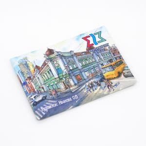
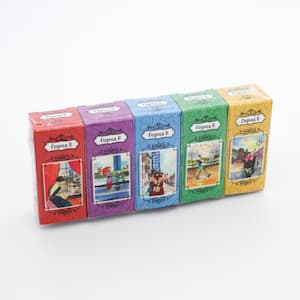

Уникальные сувениры Екатеринбурга и Урала | Оригинальные коллекции от художников со всего мира | Опт от ИПК Лазурь
Забудьте о шаблонных видах! Эксклюзивные печатные сувениры оптом: блокноты, магниты, календари, открытки с новым взглядом на любимый край.
Ищете для своего магазина или бизнеса сувенирную продукцию оптом в Екатеринбурге, которая действительно удивит и запомнится? Типография ИПК Лазурь ломает стереотипы! Мы предлагаем не просто сувениры, а маленькие арт-объекты, созданные в коллаборации с талантливыми художниками из разных городов России и даже стран. Каждый из них видит Екатеринбург и Урал по-своему, привнося уникальный стиль, манеру письма и даже здоровую долю юмора! Это гарантирует, что наши сувениры – оригинальны и не похожи на массовый продукт с однотипными картинками.
Оптовая продажа эксклюзивных сувенирных коллекций – Многоголосие талантов!




Ваше главное отличие: В то время как многие используют одни и те же, давно приевшиеся изображения Екатеринбурга, мы ищем свежий взгляд. Наши коллекции рождаются в сотрудничестве с художниками разных школ, городов и стран. Это значит:
- Небанальные сюжеты: Узнаваемые места Урала, увиденные через призму уникального авторского восприятия.
- Богатство стилей: От классической акварели и графики до современной иллюстрации, стрит-арта и абстракции.
- Юмор и ирония: Некоторые художники подходят к теме с улыбкой, создавая по-настоящему запоминающиеся и позитивные образы.
- Постоянное обновление: Мы всегда в поиске новых имен и идей, чтобы ваши полки никогда не пустовали от новинок.
Что в ассортименте (оптом, Екатеринбург):
- Блокноты и записные книжки – носители авторских миров.
- Магниты – мини-галерея разнообразных взглядов на Урал.
- Календари (всех форматов) – искусство, которое работает на вас весь год.
- Подарочные чаи в упаковке – где дизайн не менее важен, чем содержимое.
- Открытки – отправьте частичку оригинального Екатеринбурга!
- Постеры, бумажные пакеты, стикеры, пазлы – арт в разных форматах.


Почему ВАШИМ клиентам понравятся НАШИ коллекции:
- Эксклюзивность и Оригинальность: То, чего точно нет у конкурентов. Сувенир с характером и историей создания.
- Свежий взгляд на родной край: Помогает жителям и гостям Урала открывать для себя город и регион заново.
- Выбор "под себя": Разнообразие стилей позволяет каждому покупателю найти сувенир, который откликнется именно ему.
- Высокое качество полиграфии: Технологии ИПК Лазурь бережно передают все нюансы авторской работы.
- Готовое успешное решение: Берите и продавайте востребованный, нешаблонный товар!
Оптовое производство сувениров ПОД ЗАКАЗ – Ваш бренд сквозь призму искусства!
В этой технологии изображение сначала выводится на пленку с помощью фотонаборного автомата (фотовывода). Затем пленка накладывается на печатную форму, засвечивается ультрафиолетом, и после проявки на форме формируются печатающие и пробельные элементы.
В заключение:
Хотите сувениры, которые расскажут историю ВАШЕГО бренда нешаблонно? Мы не просто напечатаем логотип. Мы поможем создать уникальный дизайн или целую линейку корпоративных подарков или промо-сувениров, используя весь наш творческий потенциал!
Что мы производим ПОД ЗАКАЗ оптом:
- Весь спектр печатной сувенирной продукции: **блокноты, магниты, календари, открытки, упаковка, бумажные пакеты, стикеры, листовки, конверты и др.
- Нанесение вашей символики или разработка полностью уникального дизайна.
Наши сильные стороны в создании эксклюзивных заказов:
- Доступ к пулу талантливых художников: Хотите, чтобы ваш сувенир создал художник в определенном стиле (графика, акварель, современная иллюстрация, с юмором)? У нас есть контакты! Мы найдем идеального исполнителя под вашу задачу.
- Разработка концепции "с нуля": Поможем придумать не просто сувенир, а арт-объект, отражающий ценности вашего бренда и дух Урала (или любую другую тему!) через призму авторского взгляда.
- Профессиональная реализация: От эскиза до тиража – полный цикл в нашей *типографии Екатеринбурга* с гарантией качества.
- Индивидуальный подход: Каждый заказ – это уникальный проект.
Преимущества заказа эксклюзивных сувениров у нас:
- Ваш бренд = Искусство: Получите сувениры, которые будут выделяться и цениться, а не восприниматься как стандартный промо-материал.
- Неиссякаемый источник идей: Наши связи с художниками дают доступ к самым свежим и небанальным творческим решениям.
- Экспертиза Знаем, как воплотить художественную идею в качественный полиграфический продукт.
- Конкурентные оптовые цены в Екатеринбурге: Качество и эксклюзивность по разумной цене для тиражей.
- Доставка по Уралу.
ИПК Лазурь – это не просто типография в Екатеринбурге, это творческая мастерская по производству оригинальной сувенирной продукции оптом. Мы соединяем мировоззрение художников из разных уголков мира, современную полиграфию и ваши потребности, чтобы создавать по-настоящему уникальные и запоминающиеся вещи.
Хотите удивить своих покупателей сувенирами, которых больше нигде нет? Запросите каталог наших авторских коллекций!
Мечтаете о корпоративных подарках или промо-продукции с изюминкой и арт-ценностью? Расскажите нам о вашем бренде, и мы предложим нестандартные идеи с участием талантливых художников!
Откройте для себя мир оригинальных сувениров с ИПК Лазурь!